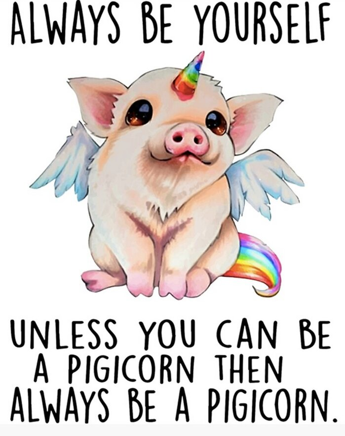

Nous voici en fin de préformation. Pratiquement 6 semaines assez intenses de passées. Mon seul regret est de ne pas avoir eu 2heures de plus pour inonder mon site de lapin-sushis et autres licorchons.
Ce que j’en ai retenu : Physiquement je le sens passer. Bah j’ai plus 20 ans. D'un autre côté, je retrouve le plaisir d’échanger avec les autres et d'apprendre. Ça compense amplement et ça m’évite de trop me comparer à une mamie. Professionnellement, le web c’est pour moi. J’accroche même si certaines notions sont encore un peu obscures. GIT et GITHUB vont me faire suer. Je sais que la lumière viendra le long du chemin – enfin, j’espère.
Ce que j’en ai retiré : D’une part, moralement je me sens bien. La confrontation de points de vue avec les autres permet d’évoluer en de me bonifier. Je ne suis pas forcément en phase avec tout le monde, mais je suis contente de savoir rester moi-même tout en évoluant. D’autre part, je pense avoir bien choisi mon lieu de formation. J’ai mis du temps à murir ma réflexion et à me préparer pour ce retour à la vie active dans un monde qui m’est encore assez inconnu et que je découvre avec plaisir. Et puis j’ai pu me faire plaisir avec ce site volontairement kitsch qui m’aura bien fait rire à concevoir visuellement. Et trouver du plaisir dans ce qu’on fait même si on s’arrache parfois les cheveux c’est l’assurance de faire quelque chose qui nous plaît.
Voilà, c'est la fin de mon projet de préfo. J'espère qu'il vous aura plu et qu'il vous aura fait rire. Moi j'y ai pris beaucoup de plaisir et j'ai pu mettre du rose et des bêtises partout - ce que je ne ferai sans doute plus jamais sur un site.
